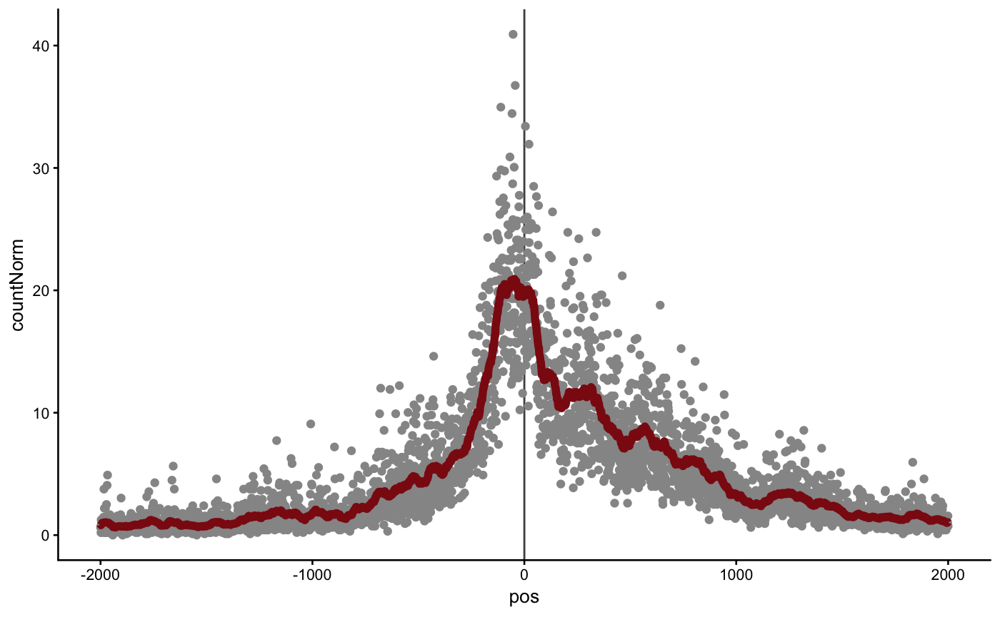
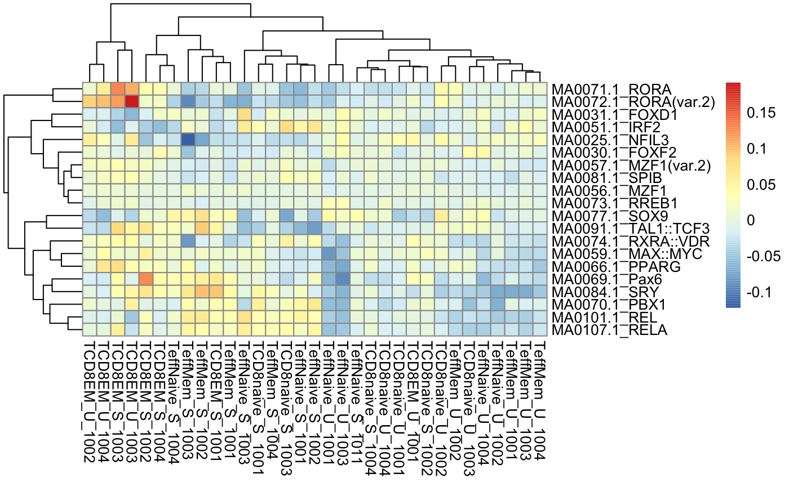

Analysis of ATAC-seq data
using ChrAccR
using ChrAccR
Fabian Mueller
2019-06-04
overview.Rmd![logo]()
Introduction
ChrAccR is an R package for the analysis of chromatin accessibility data. It supports popular protocols like the Assay for Transposase-Accessible Chromatin (ATAC-seq) and Nucleosome Occupancy and Methylome Sequencing (NOMe-seq; beta-stage) in bulk and single-cell scenarios.

Overview of ATAC-seq data analysis in ChrAccR
This vignette focuses on the analysis of ATAC-seq data. This data can be directly imported from aligned sequencing reads into a DsATAC object, the main data structure for working with ATAC-seq data. Using a small example dataset of chromatin accessibility in human immune cells, this vignette covers filtering, normalizing and aggregating count data across genomic regions of interest and introduces convenient utility functions for quality control (QC), data exploration and differential analysis. Additionally, ChrAccR facilitates the automatic generation of analysis reports using several preconfigured workflows.
Installation
To install ChrAccR and its dependencies, use the devtools installation routine:
# install devtools if not previously installed
if (!is.element('devtools', installed.packages()[,"Package"])) install.packages('devtools')
# install dependencies
devtools::install_github("demuellae/muLogR")
devtools::install_github("demuellae/muRtools")
# install ChrAccR
devtools::install_github("demuellae/ChrAccR")Loading the package and example data
Loading ChrAccR works just like loading any other R package
Example data
The ChrAccRex data package contains a small example ATAC-seq datasets for ChrAccR. If you haven’t already installed ChrAccRex use
Note that many of the plots created in this vignette use the excellent ggplot2 package. The following code loads the package and sets a different plotting theme:
The example data used in this vignette was designed for illustrating the functionality of ChrAccR rather than a full analysis. It contains ATAC-seq data for a subset of different T cell samples from the immune atlas dataset (Calderon et al. 2018) and it focuses on only a subset of the human genome (approximately 1%). It can be loaded using:
> 2019-06-04 14:54:17 0.5 STATUS STARTED Loading region count data from HDF5
> 2019-06-04 14:54:17 0.5 STATUS Region type: promoters_gc_protein_coding
> 2019-06-04 14:54:18 0.5 STATUS Region type: IA_prog_peaks
> 2019-06-04 14:54:18 0.5 STATUS Region type: t200
> 2019-06-04 14:54:19 0.5 STATUS Region type: t10k
> 2019-06-04 14:54:19 0.5 STATUS COMPLETED Loading region count data from HDF5
>
> 2019-06-04 14:54:20 0.5 STATUS STARTED Updating fragment RDS file references
> 2019-06-04 14:54:20 0.5 STATUS COMPLETED Updating fragment RDS file references
Overview of ChrAccR data structures
ChrAccR implements data structures for the convenient handling of chromatin accessibility data. Its main class is the DsAcc which represents the prototype for more specialized S4 classes for different types of accessibility protocols. Here, we focus on ATAC-seq data and the corresponding data structure is called DsATAC. The example data loaded above is such a DsATAC object.
Each DsATAC object contains
- A sample annotation table
- Genomic coordinates for one ore more region sets, such as promoters, enhancers, acessibility peaks or genomic tiling windows
- Aggregate counts for each genomic region as quantification of accessibility
- Optionally, the coordinates of sequencing fragments/reads
To get an overview of what information is stored in the example dataset, you can just type the object name:
> DsATAC chromatin accessibility dataset
> [contains disk-backed data]
> contains:
> * 33 samples: TCD8EM_S_1001, TCD8EM_S_1002, TCD8EM_S_1003, TCD8EM_S_1004, TCD8EM_U_1001, ...
> * fragment data for 33 samples [disk-backed]
> * 4 region types: promoters_gc_protein_coding, IA_prog_peaks, t200, t10k
> * * 210 regions of type promoters_gc_protein_coding
> * * 13730 regions of type IA_prog_peaks
> * * 135004 regions of type t200
> * * 2704 regions of type t10k
Accessing information in DsATAC datasets
Here are some utility functions that summarize the samples contained in the dataset:
> [1] "TCD8EM_S_1001" "TCD8EM_S_1002" "TCD8EM_S_1003" "TCD8EM_S_1004"
> [5] "TCD8EM_U_1001" "TCD8EM_U_1002"> 'data.frame': 33 obs. of 8 variables:
> $ sampleId : chr "TCD8EM_S_1001_a;TCD8EM_S_1001_b" "TCD8EM_S_1002_a;TCD8EM_S_1002_b" "TCD8EM_S_1003_a;TCD8EM_S_1003_b" "TCD8EM_S_1004_a;TCD8EM_S_1004_b" ...
> $ cellType : chr "TCD8EM" "TCD8EM" "TCD8EM" "TCD8EM" ...
> $ donor : chr "1001" "1002" "1003" "1004" ...
> $ stimulus : chr "S" "S" "S" "S" ...
> $ replicate : chr "a;b" "a;b" "a;b" "a;b" ...
> $ sampleGroup : chr "TCD8EM_S" "TCD8EM_S" "TCD8EM_S" "TCD8EM_S" ...
> $ replicateGroup: chr "TCD8EM_S_1001" "TCD8EM_S_1002" "TCD8EM_S_1003" "TCD8EM_S_1004" ...
> $ dataset : chr "ImmuneAtlas" "ImmuneAtlas" "ImmuneAtlas" "ImmuneAtlas" ...To obtain information on the region sets that are contained in the dataset, use:
> [1] "promoters_gc_protein_coding" "IA_prog_peaks"
> [3] "t200" "t10k"> [1] 210> GRanges object with 210 ranges and 23 metadata columns:
> seqnames ranges strand | gr.width
> <Rle> <IRanges> <Rle> | <integer>
> ENSG00000204219.9 chr1 23424241-23426240 - | 43680
> ENSG00000088280.18 chr1 23484069-23486068 - | 56006
> ENSG00000007968.6 chr1 23530721-23532720 - | 24791
> ENSG00000117318.8 chr1 23559295-23561294 - | 1877
> ENSG00000197880.8 chr1 23579995-23581994 + | 59074
> ... ... ... ... . ...
> ENSG00000187026.2 chr21 30746734-30748733 - | 440
> ENSG00000187005.4 chr21 30754929-30756928 - | 599
> ENSG00000183640.5 chr21 30812753-30814752 - | 556
> ENSG00000274749.1 chr21 30829260-30831259 - | 721
> ENSG00000182591.5 chr21 30881056-30883055 - | 912
> source type score phase
> <factor> <factor> <numeric> <integer>
> ENSG00000204219.9 HAVANA gene <NA> <NA>
> ENSG00000088280.18 HAVANA gene <NA> <NA>
> ENSG00000007968.6 HAVANA gene <NA> <NA>
> ENSG00000117318.8 HAVANA gene <NA> <NA>
> ENSG00000197880.8 HAVANA gene <NA> <NA>
> ... ... ... ... ...
> ENSG00000187026.2 HAVANA gene <NA> <NA>
> ENSG00000187005.4 HAVANA gene <NA> <NA>
> ENSG00000183640.5 HAVANA gene <NA> <NA>
> ENSG00000274749.1 HAVANA gene <NA> <NA>
> ENSG00000182591.5 HAVANA gene <NA> <NA>
> ID gene_id gene_type
> <character> <character> <character>
> ENSG00000204219.9 ENSG00000204219.9 ENSG00000204219.9 protein_coding
> ENSG00000088280.18 ENSG00000088280.18 ENSG00000088280.18 protein_coding
> ENSG00000007968.6 ENSG00000007968.6 ENSG00000007968.6 protein_coding
> ENSG00000117318.8 ENSG00000117318.8 ENSG00000117318.8 protein_coding
> ENSG00000197880.8 ENSG00000197880.8 ENSG00000197880.8 protein_coding
> ... ... ... ...
> ENSG00000187026.2 ENSG00000187026.2 ENSG00000187026.2 protein_coding
> ENSG00000187005.4 ENSG00000187005.4 ENSG00000187005.4 protein_coding
> ENSG00000183640.5 ENSG00000183640.5 ENSG00000183640.5 protein_coding
> ENSG00000274749.1 ENSG00000274749.1 ENSG00000274749.1 protein_coding
> ENSG00000182591.5 ENSG00000182591.5 ENSG00000182591.5 protein_coding
> gene_name level havana_gene
> <character> <character> <character>
> ENSG00000204219.9 TCEA3 2 OTTHUMG00000003233.3
> ENSG00000088280.18 ASAP3 1 OTTHUMG00000003234.7
> ENSG00000007968.6 E2F2 2 OTTHUMG00000003223.1
> ENSG00000117318.8 ID3 2 OTTHUMG00000003229.2
> ENSG00000197880.8 MDS2 2 OTTHUMG00000002927.1
> ... ... ... ...
> ENSG00000187026.2 KRTAP21-2 2 OTTHUMG00000057769.2
> ENSG00000187005.4 KRTAP21-1 2 OTTHUMG00000057777.2
> ENSG00000183640.5 KRTAP8-1 2 OTTHUMG00000057771.1
> ENSG00000274749.1 KRTAP7-1 2 OTTHUMG00000188305.1
> ENSG00000182591.5 KRTAP11-1 2 OTTHUMG00000057773.1
> Parent transcript_id transcript_type
> <list> <character> <character>
> ENSG00000204219.9 character(0) <NA> <NA>
> ENSG00000088280.18 character(0) <NA> <NA>
> ENSG00000007968.6 character(0) <NA> <NA>
> ENSG00000117318.8 character(0) <NA> <NA>
> ENSG00000197880.8 character(0) <NA> <NA>
> ... ... ... ...
> ENSG00000187026.2 character(0) <NA> <NA>
> ENSG00000187005.4 character(0) <NA> <NA>
> ENSG00000183640.5 character(0) <NA> <NA>
> ENSG00000274749.1 character(0) <NA> <NA>
> ENSG00000182591.5 character(0) <NA> <NA>
> transcript_name transcript_support_level tag
> <character> <character> <list>
> ENSG00000204219.9 <NA> <NA> character(0)
> ENSG00000088280.18 <NA> <NA> character(0)
> ENSG00000007968.6 <NA> <NA> character(0)
> ENSG00000117318.8 <NA> <NA> character(0)
> ENSG00000197880.8 <NA> <NA> character(0)
> ... ... ... ...
> ENSG00000187026.2 <NA> <NA> character(0)
> ENSG00000187005.4 <NA> <NA> character(0)
> ENSG00000183640.5 <NA> <NA> character(0)
> ENSG00000274749.1 <NA> <NA> character(0)
> ENSG00000182591.5 <NA> <NA> character(0)
> havana_transcript exon_number exon_id
> <character> <character> <character>
> ENSG00000204219.9 <NA> <NA> <NA>
> ENSG00000088280.18 <NA> <NA> <NA>
> ENSG00000007968.6 <NA> <NA> <NA>
> ENSG00000117318.8 <NA> <NA> <NA>
> ENSG00000197880.8 <NA> <NA> <NA>
> ... ... ... ...
> ENSG00000187026.2 <NA> <NA> <NA>
> ENSG00000187005.4 <NA> <NA> <NA>
> ENSG00000183640.5 <NA> <NA> <NA>
> ENSG00000274749.1 <NA> <NA> <NA>
> ENSG00000182591.5 <NA> <NA> <NA>
> ont protein_id ccdsid
> <list> <character> <character>
> ENSG00000204219.9 character(0) <NA> <NA>
> ENSG00000088280.18 character(0) <NA> <NA>
> ENSG00000007968.6 character(0) <NA> <NA>
> ENSG00000117318.8 character(0) <NA> <NA>
> ENSG00000197880.8 character(0) <NA> <NA>
> ... ... ... ...
> ENSG00000187026.2 character(0) <NA> <NA>
> ENSG00000187005.4 character(0) <NA> <NA>
> ENSG00000183640.5 character(0) <NA> <NA>
> ENSG00000274749.1 character(0) <NA> <NA>
> ENSG00000182591.5 character(0) <NA> <NA>
> -------
> seqinfo: 455 sequences from hg38 genomeYou can obtain a region-by-sample matrix containing Tn5 insertion counts using the getCounts function:
> num [1:210, 1:33] 99 527 288 339 29 381 355 364 231 613 ...
> - attr(*, "dimnames")=List of 2
> ..$ : NULL
> ..$ : chr [1:33] "TCD8EM_S_1001" "TCD8EM_S_1002" "TCD8EM_S_1003" "TCD8EM_S_1004" ...If the dataset contains fragment information, you can obtain the coordinates of sequencing fragments for each sample:
> TCD8EM_S_1001 TCD8EM_S_1002 TCD8EM_S_1003 TCD8EM_S_1004
> 330609 238663 164935 255774
> TCD8EM_U_1001 TCD8EM_U_1002 TCD8EM_U_1003 TCD8EM_U_1004
> 389454 263012 188389 286290
> TCD8naive_S_1001 TCD8naive_S_1002
> 279265 318357> GRanges object with 263012 ranges and 1 metadata column:
> seqnames ranges strand | .sample
> <Rle> <IRanges> <Rle> | <character>
> [1] chr1 23400066-23400102 + | TCD8EM_U_1002_a
> [2] chr1 23400436-23400809 - | TCD8EM_U_1002_a
> [3] chr1 23403554-23403665 + | TCD8EM_U_1002_a
> [4] chr1 23403742-23404095 + | TCD8EM_U_1002_a
> [5] chr1 23403854-23404072 + | TCD8EM_U_1002_a
> ... ... ... ... . ...
> [263008] chr21 30999121-30999194 + | TCD8EM_U_1002_b
> [263009] chr21 30999121-30999196 + | TCD8EM_U_1002_b
> [263010] chr21 30999638-30999730 + | TCD8EM_U_1002_b
> [263011] chr21 30999758-30999969 - | TCD8EM_U_1002_b
> [263012] chr21 30999996-31000204 - | TCD8EM_U_1002_b
> -------
> seqinfo: 25 sequences from hg38 genome# all Tn5 insertion sites (i.e. the concatenation of fragment start and end coordinates)
# for a set of samples
getInsertionSites(dsa, getSamples(dsa)[1:3])> GRangesList object of length 3:
> $TCD8EM_S_1001
> GRanges object with 661218 ranges and 1 metadata column:
> seqnames ranges strand | .sample
> <Rle> <IRanges> <Rle> | <character>
> [1] chr1 23399922 + | TCD8EM_S_1001_a
> [2] chr1 23399962 + | TCD8EM_S_1001_b
> [3] chr1 23400003 + | TCD8EM_S_1001_b
> [4] chr1 23400066 + | TCD8EM_S_1001_a
> [5] chr1 23400229 + | TCD8EM_S_1001_b
> ... ... ... ... . ...
> [661214] chr21 30999986 - | TCD8EM_S_1001_a
> [661215] chr21 30999995 - | TCD8EM_S_1001_a
> [661216] chr21 31000033 + | TCD8EM_S_1001_a
> [661217] chr21 31000038 - | TCD8EM_S_1001_b
> [661218] chr21 31000159 - | TCD8EM_S_1001_a
>
> ...
> <2 more elements>
> -------
> seqinfo: 25 sequences from hg38 genome
Manipulating DsATAC datasets
ChrAccR provides a number of functions for filtering a dataset and for adding additional data.
Filtering for samples and genomic regions
For instance, if you want to work with only a subset of the data, you can remove samples and genomic regions from the dataset. The example contains data for resting (unstimulated) and stimulated T cells. The following code removes the stimulated cells and retains only the resting state cells:
isStim <- getSampleAnnot(dsa)[,"stimulus"] == "S"
dsa_resting <- removeSamples(dsa, isStim)
dsa_resting> DsATAC chromatin accessibility dataset
> [contains disk-backed data]
> contains:
> * 16 samples: TCD8EM_U_1001, TCD8EM_U_1002, TCD8EM_U_1003, TCD8EM_U_1004, TCD8naive_U_1001, ...
> * fragment data for 16 samples [disk-backed]
> * 4 region types: promoters_gc_protein_coding, IA_prog_peaks, t200, t10k
> * * 210 regions of type promoters_gc_protein_coding
> * * 13730 regions of type IA_prog_peaks
> * * 135004 regions of type t200
> * * 2704 regions of type t10kSometimes you will want to focus on certain regions. For instance the following code filters the dataset, such that only the most variably accessible peaks are retained
peakCounts <- getCounts(dsa, "IA_prog_peaks")
# identify the 1000 most variable peaks
isVar <- rank(-matrixStats::rowVars(peakCounts)) <= 1000
# remove the less-variable peaks from the dataset
dsa_varPeaks <- removeRegions(dsa, !isVar, "IA_prog_peaks")
getNRegions(dsa_varPeaks, "IA_prog_peaks")> [1] 1000There are also shortcuts for filtering certain regions from the dataset, for example:
# remove those regions that do not have at least 10 insertions in at least 75% of the samples
dsa_filtered <- filterLowCovg(dsa, thresh=10L, reqSamples=0.75)> 2019-06-04 14:54:25 0.5 STATUS Removing regions with read counts lower than 10 in more than 8 samples (24%)
> 2019-06-04 14:54:26 0.5 INFO Removed 0 regions (0%) of type promoters_gc_protein_coding
> 2019-06-04 14:54:26 0.5 INFO Removed 0 regions (0%) of type IA_prog_peaks
> 2019-06-04 14:54:32 0.5 INFO Removed 5555 regions (4.11%) of type t200
> 2019-06-04 14:54:32 0.5 INFO Removed 4 regions (0.15%) of type t10k> 2019-06-04 14:54:33 0.5 INFO Removed 64 regions (30.48%) of type promoters_gc_protein_coding
> 2019-06-04 14:54:33 0.6 INFO Removed 7118 regions (51.84%) of type IA_prog_peaks
> 2019-06-04 14:54:35 0.6 INFO Removed 89001 regions (65.92%) of type t200
> 2019-06-04 14:54:36 0.6 INFO Removed 1781 regions (65.87%) of type t10k
> 2019-06-04 14:54:36 0.6 STATUS Filtering fragment dataTo remove a region type entirely, use removeRegionType:
> [1] "promoters_gc_protein_coding" "IA_prog_peaks"
> [3] "t200"Normalizing count data
ChrAccR provides several methods for normalizing and adjusting the region count data. These methods can be accessed through the transformCounts function:
> 2019-06-04 14:54:47 0.5 STATUS STARTED Performing quantile normalization
> 2019-06-04 14:54:48 0.5 STATUS Region type: promoters_gc_protein_coding
> 2019-06-04 14:54:48 0.5 STATUS Region type: IA_prog_peaks
> 2019-06-04 14:54:49 0.6 STATUS Region type: t200
> 2019-06-04 14:54:51 0.6 STATUS Region type: t10k
> 2019-06-04 14:54:52 0.6 STATUS COMPLETED Performing quantile normalization# RPKM normalization of peak counts
dsa_rpkm <- transformCounts(dsa, method="RPKM", regionTypes=c("IA_prog_peaks"))> 2019-06-04 14:54:53 0.6 STATUS STARTED Performing RPKM normalization
> 2019-06-04 14:54:53 0.6 STATUS Region type: IA_prog_peaks
> 2019-06-04 14:54:54 0.6 STATUS COMPLETED Performing RPKM normalization> 2019-06-04 14:54:55 0.6 STATUS STARTED log2 transforming counts
> 2019-06-04 14:54:55 0.6 STATUS Region type: IA_prog_peaks
> 2019-06-04 14:54:56 0.6 STATUS COMPLETED log2 transforming counts# DESeq2 variance stabilizing transformation (vst)
dsa_vst <- transformCounts(dsa, method="vst", regionTypes=c("IA_prog_peaks"))> 2019-06-04 14:54:56 0.6 STATUS STARTED Applying DESeq2 VST
> 2019-06-04 14:54:59 0.6 STATUS Region type: IA_prog_peaks
> 2019-06-04 14:55:00 0.8 STATUS COMPLETED Applying DESeq2 VST# correct for potential batch effects based on the annotated donor
dsa_vst <- transformCounts(dsa_vst, method="batchCorrect", batch=getSampleAnnot(dsa_qnorm)[,"donor"], regionTypes=c("IA_prog_peaks"))> 2019-06-04 14:55:01 0.8 STATUS STARTED Applying batch effect correction
> 2019-06-04 14:55:01 0.7 STATUS Region type: IA_prog_peaks
> 2019-06-04 14:55:02 0.7 STATUS COMPLETED Applying batch effect correctionAdding a region type for count data aggregation
Sometimes you want to aggregate count data over a region set after the DsATAC object has been created. Maybe you came up with a better peak set or your collaborator provided you with a highly interesting list of putative enhancer elements. These types of region sets can be easily added to DsATAC objects using the regionAggregation function. It is most useful, if the dataset contains insertion/fragment data. The following example downloads a set of putative regulatory elements defined by the Ensembl Regulatory Build (Zerbino et al. 2015) of BLUEPRINT epigenome data (http://www.blueprint-epigenome.eu/) and aggregates the ATAC-seq insertions within these regions.
# download the file and prepare a GRanges object
regionFileUrl <- "http://medical-epigenomics.org/software/rnbeads/materials//data/regiondb/annotation_hg38_ensembleRegBuildBPall.RData"
downFn <- tempfile(pattern="regions", fileext="RData")
download.file(regionFileUrl, downFn)
regionEnv <- new.env()
load(downFn, envir=regionEnv)
regionGr <- unlist(regionEnv$regions)
# aggregate insertions across the new region type
dsa_erb <- regionAggregation(dsa, regionGr, "ERB", signal="insertions")
dsa_erbMerging samples
You can also merge samples, e.g. from different technical or biological replicates. In the following example, we merge all biological replicates (originating from different donors) for the same cell type and stimulation conditions. This grouping information is contained in the sampleGroup annotation column. By default, counts will be added up for each aggregated region, but you can specify other aggregation methods such as the mean or median in the countAggrFun argument.
> 2019-06-04 14:55:03 0.7 STATUS Merging samples (region set: 'promoters_gc_protein_coding')...
> 2019-06-04 14:55:03 0.7 STATUS Merging samples (region set: 'IA_prog_peaks')...
> 2019-06-04 14:55:04 0.7 STATUS Merging samples (region set: 't200')...
> 2019-06-04 14:55:08 0.8 STATUS Merging samples (region set: 't10k')...
> 2019-06-04 14:55:08 0.8 STATUS Merging sample fragment data...> [1] "TCD8EM_S" "TCD8EM_U" "TCD8naive_S" "TCD8naive_U" "TeffMem_S"
> [6] "TeffMem_U" "TeffNaive_S" "TeffNaive_U"Saving and loading datasets
In many analysis workflow, you want to save an R dataset to disk in order to use it in downstream analysis using custom R scripts. Note that R’s workflow of saveRDS readRDS is generally not applicable for saving and loading DsATAC datasets, because ChrAccR optionally uses disk-backed data structures in order to be more memory efficient in the analysis. Instead, please use ChrAccR’s functions:
> 2019-06-04 14:55:24 0.8 STATUS STARTED Saving region count data to HDF5
> 2019-06-04 14:55:25 0.8 STATUS Region type: promoters_gc_protein_coding
> 2019-06-04 14:55:25 0.8 STATUS Region type: IA_prog_peaks
> 2019-06-04 14:55:26 0.8 STATUS Region type: t200
> 2019-06-04 14:55:28 0.8 STATUS Region type: t10k
> 2019-06-04 14:55:28 0.8 STATUS COMPLETED Saving region count data to HDF5
>
> 2019-06-04 14:55:29 0.8 STATUS STARTED Saving fragment data to RDS
> 2019-06-04 14:55:29 0.8 STATUS COMPLETED Saving fragment data to RDS> 2019-06-04 14:55:30 0.8 STATUS STARTED Loading region count data from HDF5
> 2019-06-04 14:55:31 0.8 STATUS Region type: promoters_gc_protein_coding
> 2019-06-04 14:55:31 0.8 STATUS Region type: IA_prog_peaks
> 2019-06-04 14:55:32 0.8 STATUS Region type: t200
> 2019-06-04 14:55:32 0.8 STATUS Region type: t10k
> 2019-06-04 14:55:32 0.8 STATUS COMPLETED Loading region count data from HDF5
>
> 2019-06-04 14:55:33 0.8 STATUS STARTED Updating fragment RDS file references
> 2019-06-04 14:55:33 0.8 STATUS COMPLETED Updating fragment RDS file references> DsATAC chromatin accessibility dataset
> [contains disk-backed data]
> contains:
> * 33 samples: TCD8EM_S_1001, TCD8EM_S_1002, TCD8EM_S_1003, TCD8EM_S_1004, TCD8EM_U_1001, ...
> * fragment data for 33 samples [disk-backed]
> * 4 region types: promoters_gc_protein_coding, IA_prog_peaks, t200, t10k
> * * 210 regions of type promoters_gc_protein_coding
> * * 13730 regions of type IA_prog_peaks
> * * 135004 regions of type t200
> * * 2704 regions of type t10kImporting ATAC-seq data
We provide a reduced version of the example dataset that you have already seen as raw files. This dataset contains BAM files for one technical replicate of the example dataset as well as a sample annotation table. If you have not already done so, please download and unzip the dataset:
# download and unzip the dataset
datasetUrl <- "https://s3.amazonaws.com/muellerf/data/ChrAccR/data/tutorial/tcells.zip"
downFn <- "tcells.zip"
download.file(datasetUrl, downFn)
unzip(downFn, exdir=".")
Importing data from bam files
ATAC-seq data can be read from BAM files that contain aligned reads. These reads originate from fragments whose endpoints resemble Tn5 insertion sites. All ChrAccR needs to read the input files is a sample annotation table and pointers to the BAM files. The following code reads the sample annotation table from the supplied text file and adds a column that contains the BAM file locations on your disk for each sample. Additionally, we prepare a list of region sets (genome-wide tiling regions with window sizes of 500bp and 5kb) that we want to aggregate the insertion counts over.
# prepare the sample annotation table
sampleAnnotFn <- file.path("tcells", "samples.tsv")
bamDir <- file.path("tcells", "bam")
sampleAnnot <- read.table(sampleAnnotFn, sep="\t", header=TRUE, stringsAsFactors=FALSE)
# add a column that ChrAccR can use to find the correct bam file for each sample
sampleAnnot[,"bamFilenameFull"] <- file.path(bamDir, sampleAnnot[,"bamFilename"])
# prepare a list of GRanges object. Each element corresponds to a region set
rsl <- list(
"tiling500bp" = muRtools::getTilingRegions("hg38", width=500L, onlyMainChrs=TRUE),
"tiling5kb" = muRtools::getTilingRegions("hg38", width=5000L, onlyMainChrs=TRUE)
)After these preparatory steps, we can easily create a DsATAC dataset using the DsATAC.bam function. Supplied with the sample annotation table and a reference to the BAM files, it will automatically determine Tn5 insertion sites from the BAM files and aggregate counts over the optionally supplied list of region sets (if no such list is provided, 200bp-tiling windows will be used as the default).
Analysis reports
ChrAccR provides a way to bundle certain types of analyses into workflows that automatically create analysis reports. These HTML-based analysis reports can be viewed in any web browser and provide a convenient overview of the analysis results that can easily shared with collaborators. ChrAccR provides the following workflows:
-
summary: dataset characterization and quality control -
exploratory: exploratory analyses such as dimension reduction, clustering, TF motif enrichment, etc. -
differential: differential accessibility analysis between groups of samples
Provided with a DsATAC dataset, the workflows can be started using the createReport_X() functions (where X is the name of the workflow). Workflow options can be specified using the setConfigElement() function for setting ChrAccR’s options. Here are some option examples:
# exclude the promoter and 't10k' (10kb tiling windows) region types from the analysis
setConfigElement("regionTypes", setdiff(getRegionTypes(dsa), c("promoters_gc_protein_coding", "t10k")))
# see the current option setting
getConfigElement("regionTypes")> [1] "IA_prog_peaks" "t200"# use the following sample annotation columns for exploratory analyses
setConfigElement("annotationColumns", c("cellType", "donor", "stimulus"))
# add a custom color scheme for the 'stimulus' and 'cellType' annotation columns
setConfigElement("colorSchemes", c(
getConfigElement("colorSchemes"),
list(
"stimulus"=c("U"="#7fbc41", "S"="#de77ae"),
"cellType"=c("TCD8naive"="#9ecae1", "TCD8EM"="#08519c", "TeffNaive"="#016c59", "TeffMem"="#014636")
)
))To see which options are available use the help function for setConfigElement
The createReport_X() take a DsATAC dataset as input and write their results to a report directory. Not that this directory can only contain one report for each analysis workflow and the function will result in an error if the directory already contains a report of that type.
Summary analysis
To get an overview of an ATAC-seq dataset use createReport_summary(). The resulting report will contain a summary of the sample annotation, genomic coverage by sequencing reads and QC metrics such as a summary of the fragment size distribution and enrichment of Tn5 insertions at transcription start sites (TSS enrichment).
Exploratory analysis
The exploratory analysis reports comprises unsupervised analysis results, such as dimension reduction plots and sample clustering. Additionally, TF motif activity for peak region sets (those region sets that contain 'peak' in their name) is assessed using the chromVAR package (Schep et al. 2017).
Differential analysis
The differential analysis workflow focuses on the pairwise comparison between groups of samples. The resulting report contains summary tables and plot for each comparison (e.g. volcano plots). Differentially accessible regions are identified using DESeq2 and multiple p-value and rank cutoffs.
# differential analysis option settings
setConfigElement("differentialColumns", c("stimulus", "cellType"))
# adjust for the donor annotation in the differential test
setConfigElement("differentialAdjColumns", c("donor"))
# create the report (takes ~18 min on the example dataset)
createReport_differential(dsa, reportDir)Utility functions
Principal component plot
To quickly obtain a dimension reduction plot based on a specific set of regions in a DsATAC dataset, you can use the getDimRedCoords.X functions from the muRtools package:
cm <- getCounts(dsa_qnorm, "IA_prog_peaks")
pcaCoord <- muRtools::getDimRedCoords.pca(t(cm))
muRtools::getDimRedPlot(pcaCoord, annot=getSampleAnnot(dsa_qnorm), colorCol="cellType", shapeCol="stimulus")
Plot the fragment size distribution
The fragment size distribution of an ATAC-seq can provide valuable quality control information. Typically, we expect a large number of fragments with sub-nucleosomal length (length < 200bp) and further peaks corresponding to 1,2, … nucleosomes (roughly multiples of 200bp in length). Here is how you can plot a corresponding density estimation of the fragment length distribution for a specific sample in the dataset.

TSS enrichment plots
The enrichment of the number of fragments at transcription start sites (TSS) over genomic background is a valuable indicator for the signal-to-noise ratio in ATAC-seq data. In ChrAccR, the TSS enrichment can be computed for each sample in a dataset using the getTssEnrichment function. You will need the coordinates of TSSs in the genome as input and the function will return an object comprising a ggplot object as well as a numeric score that quantifies the enrichment at the promoter (default definition: TSS +/- 2kb) vs a background (default: 100bp outside the promoter window). Absolute and smoothed counts will be used for the computation.
# prepare a GRanges object of TSS coordinates
tssGr <- muRtools::getAnnotGrl.gencode("gencode.v27")[["gene"]]
tssGr <- tssGr[elementMetadata(tssGr)[,"gene_type"]=="protein_coding"]
tssGr <- promoters(tssGr, upstream=0, downstream=1)
tssGr> GRanges object with 19836 ranges and 20 metadata columns:
> seqnames ranges strand | source type score
> <Rle> <IRanges> <Rle> | <factor> <factor> <numeric>
> [1] chr1 65419 + | HAVANA gene <NA>
> [2] chr1 451697 - | HAVANA gene <NA>
> [3] chr1 686673 - | HAVANA gene <NA>
> [4] chr1 923928 + | HAVANA gene <NA>
> [5] chr1 959309 - | HAVANA gene <NA>
> ... ... ... ... . ... ... ...
> [19832] chrM 10470 + | ENSEMBL gene <NA>
> [19833] chrM 10760 + | ENSEMBL gene <NA>
> [19834] chrM 12337 + | ENSEMBL gene <NA>
> [19835] chrM 14673 - | ENSEMBL gene <NA>
> [19836] chrM 14747 + | ENSEMBL gene <NA>
> phase gene_id gene_type gene_name
> <integer> <character> <character> <character>
> [1] <NA> ENSG00000186092.5 protein_coding OR4F5
> [2] <NA> ENSG00000284733.1 protein_coding OR4F29
> [3] <NA> ENSG00000284662.1 protein_coding OR4F16
> [4] <NA> ENSG00000187634.11 protein_coding SAMD11
> [5] <NA> ENSG00000188976.10 protein_coding NOC2L
> ... ... ... ... ...
> [19832] <NA> ENSG00000212907.2 protein_coding MT-ND4L
> [19833] <NA> ENSG00000198886.2 protein_coding MT-ND4
> [19834] <NA> ENSG00000198786.2 protein_coding MT-ND5
> [19835] <NA> ENSG00000198695.2 protein_coding MT-ND6
> [19836] <NA> ENSG00000198727.2 protein_coding MT-CYB
> level havana_gene transcript_id transcript_type
> <character> <character> <character> <character>
> [1] 2 OTTHUMG00000001094.3 <NA> <NA>
> [2] 2 OTTHUMG00000002860.3 <NA> <NA>
> [3] 2 OTTHUMG00000002581.3 <NA> <NA>
> [4] 2 OTTHUMG00000040719.10 <NA> <NA>
> [5] 2 OTTHUMG00000040720.1 <NA> <NA>
> ... ... ... ... ...
> [19832] 3 <NA> <NA> <NA>
> [19833] 3 <NA> <NA> <NA>
> [19834] 3 <NA> <NA> <NA>
> [19835] 3 <NA> <NA> <NA>
> [19836] 3 <NA> <NA> <NA>
> transcript_name transcript_support_level tag
> <character> <character> <character>
> [1] <NA> <NA> <NA>
> [2] <NA> <NA> overlapping_locus
> [3] <NA> <NA> overlapping_locus
> [4] <NA> <NA> <NA>
> [5] <NA> <NA> <NA>
> ... ... ... ...
> [19832] <NA> <NA> <NA>
> [19833] <NA> <NA> <NA>
> [19834] <NA> <NA> <NA>
> [19835] <NA> <NA> <NA>
> [19836] <NA> <NA> <NA>
> havana_transcript exon_number exon_id ont
> <character> <character> <character> <character>
> [1] <NA> <NA> <NA> <NA>
> [2] <NA> <NA> <NA> <NA>
> [3] <NA> <NA> <NA> <NA>
> [4] <NA> <NA> <NA> <NA>
> [5] <NA> <NA> <NA> <NA>
> ... ... ... ... ...
> [19832] <NA> <NA> <NA> <NA>
> [19833] <NA> <NA> <NA> <NA>
> [19834] <NA> <NA> <NA> <NA>
> [19835] <NA> <NA> <NA> <NA>
> [19836] <NA> <NA> <NA> <NA>
> protein_id ccdsid
> <character> <character>
> [1] <NA> <NA>
> [2] <NA> <NA>
> [3] <NA> <NA>
> [4] <NA> <NA>
> [5] <NA> <NA>
> ... ... ...
> [19832] <NA> <NA>
> [19833] <NA> <NA>
> [19834] <NA> <NA>
> [19835] <NA> <NA>
> [19836] <NA> <NA>
> -------
> seqinfo: 455 sequences from hg38 genome> 2019-06-04 14:56:28 1.7 WARNING not all elements in GRanges have the same width. --> discarding 2 of 19817 regions that do not.
> 2019-06-04 14:56:29 1.8 STATUS STARTED Computing sample coverage
> 2019-06-04 14:56:29 1.8 STATUS Computing genome-wide coverage for sample TCD8EM_U_1002
> 2019-06-04 14:56:32 1.2 STATUS COMPLETED Computing sample coverage
>
> 2019-06-04 14:56:32 1.2 STATUS STARTED Aggregating counts
> 2019-06-04 14:56:33 1.2 STATUS Sample: TCD8EM_U_1002
> 2019-06-04 14:56:43 2.1 STATUS COMPLETED Aggregating counts# enrichment score: number of insertions at the TSS
# over number of insertion in background regions
tsse$tssEnrichment> [1] 40.91858
Transcription factor motif enrichment using ChromVAR
Genome-wide aggregates across potential binding sites for transcription factors can be extremely useful in the interpretation of chromatin accessibility. The chromVAR package is designed to quantify the overall TF motif accessibility for each sample in a dataset (Schep et al. 2017). Using the getChromVarDev function, we can obtain these deviation scores from DsATAC datasets:
> num [1:452, 1:33] -0.04303 0.00111 -0.02502 -0.01913 -0.00295 ...
> - attr(*, "dimnames")=List of 2
> ..$ : chr [1:452] "MA0025.1_NFIL3" "MA0030.1_FOXF2" "MA0031.1_FOXD1" "MA0051.1_IRF2" ...
> ..$ : chr [1:33] "TCD8EM_S_1001" "TCD8EM_S_1002" "TCD8EM_S_1003" "TCD8EM_S_1004" ...
Exporting to high-level Bioconductor data structures
ChrAccR offers utility functions to convert accessibility data to other commonly used data structures for Bioconductor-based workflows. For instance, to export count data aggregated over a certain region type as a SummarizedExperiments object you can use:
> class: RangedSummarizedExperiment
> dim: 13730 33
> metadata(0):
> assays(1): counts
> rownames: NULL
> rowData names(5): name score score_norm sampleId dataset
> colnames(33): TCD8EM_S_1001 TCD8EM_S_1002 ... TeffNaive_U_1003
> TeffNaive_U_1004
> colData names(8): sampleId cellType ... replicateGroup datasetTo export data as a DESeq2 dataset for differential accessibility analysis:
> class: DESeqDataSet
> dim: 13730 33
> metadata(1): version
> assays(4): counts mu H cooks
> rownames: NULL
> rowData names(55): name score ... deviance maxCooks
> colnames(33): TCD8EM_S_1001 TCD8EM_S_1002 ... TeffNaive_U_1003
> TeffNaive_U_1004
> colData names(9): sampleId cellType ... dataset sizeFactorSession Info
> [1] "2019-06-04"> R version 3.5.0 (2018-04-23)
> Platform: x86_64-apple-darwin15.6.0 (64-bit)
> Running under: macOS 10.14.5
>
> Matrix products: default
> BLAS: /Library/Frameworks/R.framework/Versions/3.5/Resources/lib/libRblas.0.dylib
> LAPACK: /Library/Frameworks/R.framework/Versions/3.5/Resources/lib/libRlapack.dylib
>
> locale:
> [1] en_US.UTF-8/en_US.UTF-8/en_US.UTF-8/C/en_US.UTF-8/en_US.UTF-8
>
> attached base packages:
> [1] parallel stats4 stats graphics grDevices utils datasets
> [8] methods base
>
> other attached packages:
> [1] motifmatchr_1.4.0 chromVAR_1.4.0
> [3] BSgenome.Hsapiens.UCSC.hg38_1.4.1 BSgenome_1.50.0
> [5] Biostrings_2.50.1 XVector_0.22.0
> [7] rtracklayer_1.42.1 GenomicFeatures_1.34.1
> [9] AnnotationDbi_1.44.0 limma_3.38.3
> [11] DESeq2_1.22.1 SummarizedExperiment_1.12.0
> [13] Biobase_2.42.0 preprocessCore_1.44.0
> [15] HDF5Array_1.10.1 rhdf5_2.26.0
> [17] DelayedArray_0.8.0 BiocParallel_1.16.2
> [19] matrixStats_0.54.0 ChrAccR_0.9.1
> [21] Matrix_1.2-15 muRtools_0.9
> [23] data.table_1.12.0 plotrix_3.7-4
> [25] gplots_3.0.1.1 muLogR_0.1
> [27] ggplot2_3.1.0 GenomicRanges_1.34.0
> [29] GenomeInfoDb_1.18.1 IRanges_2.16.0
> [31] S4Vectors_0.20.1 BiocGenerics_0.28.0
>
> loaded via a namespace (and not attached):
> [1] backports_1.1.3 Hmisc_4.1-1
> [3] VGAM_1.0-6 plyr_1.8.4
> [5] lazyeval_0.2.1 splines_3.5.0
> [7] TFBSTools_1.20.0 digest_0.6.18
> [9] htmltools_0.3.6 GO.db_3.7.0
> [11] gdata_2.18.0 magrittr_1.5
> [13] checkmate_1.8.5 memoise_1.1.0
> [15] JASPAR2018_1.1.1 cluster_2.0.7-1
> [17] readr_1.3.0 annotate_1.60.0
> [19] R.utils_2.7.0 pkgdown_1.3.0
> [21] prettyunits_1.0.2 colorspace_1.4-0
> [23] blob_1.1.1 xfun_0.4
> [25] dplyr_0.7.8 jsonlite_1.6
> [27] crayon_1.3.4 RCurl_1.95-4.11
> [29] roxygen2_6.1.1 genefilter_1.64.0
> [31] bindr_0.1.1 TFMPvalue_0.0.8
> [33] survival_2.43-3 glue_1.3.0
> [35] gtable_0.2.0 zlibbioc_1.28.0
> [37] Rhdf5lib_1.4.2 scales_1.0.0
> [39] pheatmap_1.0.10 DBI_1.0.0
> [41] miniUI_0.1.1.1 Rcpp_1.0.0
> [43] viridisLite_0.3.0 xtable_1.8-3
> [45] progress_1.2.0 htmlTable_1.12
> [47] foreign_0.8-71 bit_1.1-14
> [49] Formula_1.2-3 DT_0.5
> [51] htmlwidgets_1.3 httr_1.4.0
> [53] RColorBrewer_1.1-2 nabor_0.5.0
> [55] acepack_1.4.1 R.methodsS3_1.7.1
> [57] pkgconfig_2.0.2 XML_3.98-1.16
> [59] nnet_7.3-12 locfit_1.5-9.1
> [61] reshape2_1.4.3 tidyselect_0.2.5
> [63] labeling_0.3 rlang_0.3.1
> [65] later_0.7.5 munsell_0.5.0
> [67] tools_3.5.0 DirichletMultinomial_1.24.0
> [69] RSQLite_2.1.1 evaluate_0.12
> [71] stringr_1.4.0 yaml_2.2.0
> [73] ChrAccRex_0.1 knitr_1.21
> [75] bit64_0.9-7 fs_1.2.6
> [77] caTools_1.17.1.1 purrr_0.2.5
> [79] KEGGREST_1.22.0 bindrcpp_0.2.2
> [81] mime_0.6 R.oo_1.22.0
> [83] poweRlaw_0.70.1 xml2_1.2.0
> [85] biomaRt_2.38.0 compiler_3.5.0
> [87] rstudioapi_0.8 plotly_4.8.0
> [89] png_0.1-7 tibble_2.0.1
> [91] geneplotter_1.60.0 stringi_1.3.1
> [93] desc_1.2.0 lattice_0.20-38
> [95] CNEr_1.18.1 commonmark_1.7
> [97] markdown_0.9 pillar_1.3.1
> [99] bitops_1.0-6 httpuv_1.4.5
> [101] R6_2.4.0 latticeExtra_0.6-28
> [103] promises_1.0.1 KernSmooth_2.23-15
> [105] gridExtra_2.3 codetools_0.2-15
> [107] MASS_7.3-51.1 gtools_3.8.1
> [109] assertthat_0.2.0 seqLogo_1.48.0
> [111] rprojroot_1.3-2 withr_2.1.2
> [113] GenomicAlignments_1.18.0 Rsamtools_1.34.0
> [115] GenomeInfoDbData_1.2.0 hms_0.4.2
> [117] grid_3.5.0 rpart_4.1-13
> [119] tidyr_0.8.2 rmarkdown_1.11
> [121] shiny_1.2.0 base64enc_0.1-3References
Calderon, Diego, Michelle LT Nguyen, Anja Mezger, Arwa Kathiria, Vinh Nguyen, Ninnia Lescano, Beijing Wu, et al. 2018. “Landscape of Stimulation-Responsive Chromatin Across Diverse Human Immune Cells.” Biorxiv.org. https://doi.org/10.1101/409722.
Schep, Alicia N, Beijing Wu, Jason D Buenrostro, and William J Greenleaf. 2017. “chromVAR: Inferring Transcription-Factor-Associated Accessibility from Single-Cell Epigenomic Data.” Nature Methods 14: 975–78. https://doi.org/10.1038/nmeth.4401.
Zerbino, Daniel R, Steven P Wilder, Nathan Johnson, Thomas Juettemann, and Paul R Flicek. 2015. “The Ensembl Regulatory Build.” Genome Biology 16: 56. https://doi.org/10.1186/s13059-015-0621-5.